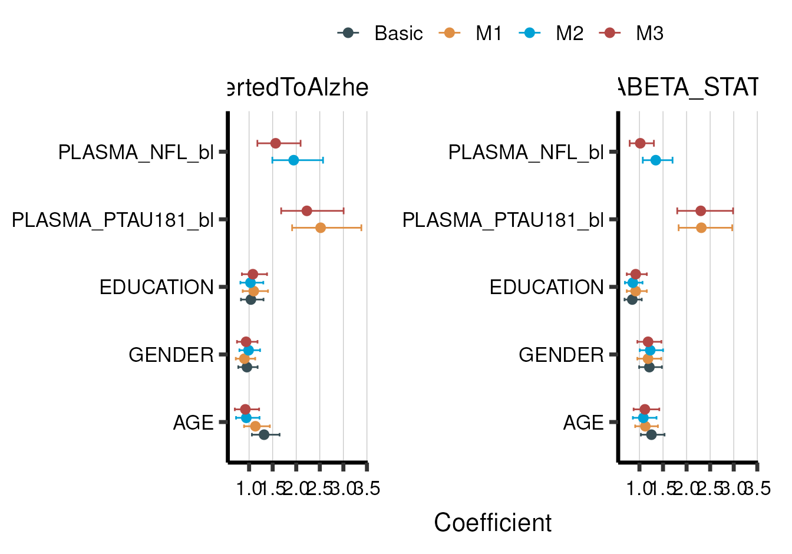
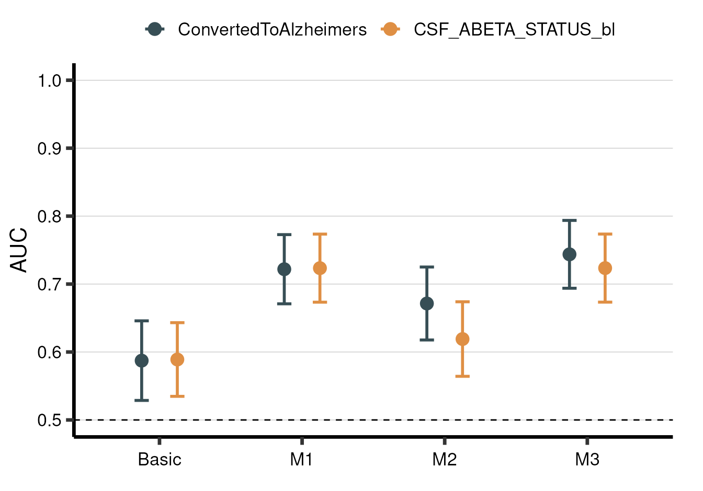
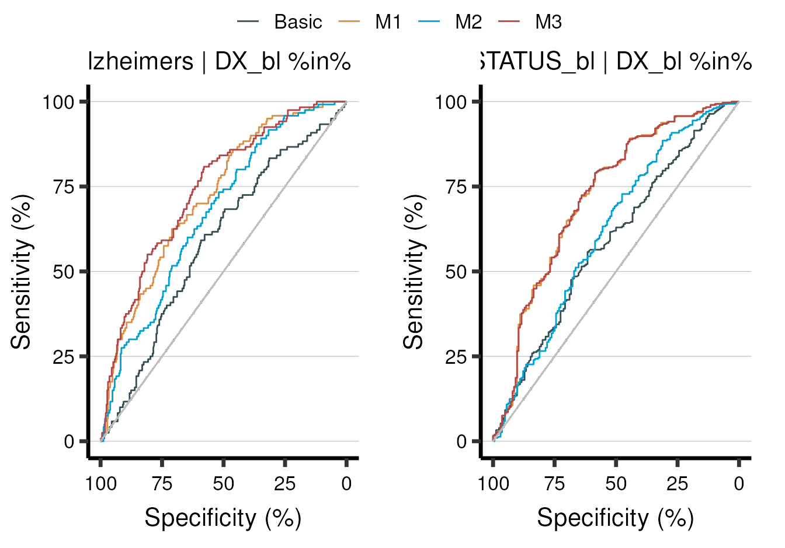

What is an aba model?
An aba_model is the core function of the aba package. An aba model contains all the information about your data and the factors of your analysis. Once you have fit an aba model, you can do many cool things with it like creating publication-ready tables and figures or use it to make decisions about a future clinical trial.
In this introduction tutorial, you will learn about the main components of an aba model and get a glimpse into the awesome functionalities of the aba package.
A basic example
An aba model is composed of the following factors:
- data
- groups
- outcomes
- predictors
- covariates
- statistics
These are the things you will define in your aba model. What follows is a basic example of fitting an aba model to perform logistic regression on two different sub-groups of our data, with two different outcomes, with three different combinations of predictor variables, and with three fixed covariate variables:
data <- adnimerge %>% dplyr::filter(VISCODE == 'bl')
model <- aba_model() %>%
set_data(data) %>%
set_groups(DX_bl %in% c('MCI','AD')) %>%
set_outcomes(ConvertedToAlzheimers, CSF_ABETA_STATUS_bl) %>%
set_predictors(
PLASMA_PTAU181_bl,
PLASMA_NFL_bl,
c(PLASMA_PTAU181_bl, PLASMA_NFL_bl)
) %>%
set_covariates(AGE, GENDER, EDUCATION) %>%
set_stats(stat_glm(std.beta=T))As you see here, we set all the various factors of the aba model using the set_* functions. These functions modify and build up the aba model. We can print our aba model to the console at any time to get a nice overview of what our model contains:
print(model)
#> ----------------------
#> ABA MODEL (not fitted)
#> ----------------------
#> Groups:
#> DX_bl %in% c("MCI", "AD")
#>
#> Outcomes:
#> ConvertedToAlzheimers
#> CSF_ABETA_STATUS_bl
#>
#> Covariates:
#> AGE GENDER EDUCATION
#>
#> Predictors:
#> M1
#> M2
#> M3
#>
#> Stats:
#> glm
#> We can see that everything we set is included, along with some automatically generated labels (e.g., ‘G1’ and ‘G2’ for groups) that we will dig further into later.
In any case, once you’ve sufficiently defined your model – an aba model needs at least some data, one or more outcomes and stats, and either one or more predictor or covariate – then you should call the fit() function. This function will trigger the actual fitting of your stats on all the different group - outcome - predictor combinations.
Now that our aba model has been fit, the next natural thing to do is to call the summary() function to gather up the coefficients and metrics of each statistical fit.
model_summary <- model %>% summary()
print(model_summary)
#>
#> ----------------------------------------------------------------------------
#> Group: DX_bl %in% c("MCI", "AD") | Outcome: ConvertedToAlzheimers | Stat: S1
#> ----------------------------------------------------------------------------
#> # A tibble: 4 × 10
#> predictor AGE GENDER EDUCATION PLASMA_PTAU181_… PLASMA_NFL_bl auc
#> <chr> <chr> <chr> <chr> <chr> <chr> <chr>
#> 1 Basic 1.32 … 0.95 [… 1.04 [0.8… NA NA 0.59…
#> 2 M1 1.13 … 0.90 [… 1.10 [0.8… 2.52 [1.91, 3.3… NA 0.72…
#> 3 M2 0.94 … 0.99 [… 1.03 [0.8… NA 1.95 [1.49, … 0.67…
#> 4 M3 0.92 … 0.94 [… 1.08 [0.8… 2.23 [1.68, 3.0… 1.56 [1.18, … 0.74…
#> # … with 3 more variables: aic <chr>, pval <chr>, nobs <chr>
#>
#> --------------------------------------------------------------------------
#> Group: DX_bl %in% c("MCI", "AD") | Outcome: CSF_ABETA_STATUS_bl | Stat: S1
#> --------------------------------------------------------------------------
#> # A tibble: 4 × 10
#> predictor AGE GENDER EDUCATION PLASMA_PTAU181_… PLASMA_NFL_bl auc
#> <chr> <chr> <chr> <chr> <chr> <chr> <chr>
#> 1 Basic 1.26 … 1.21 [… 0.85 [0.6… NA NA 0.59…
#> 2 M1 1.12 … 1.18 [… 0.92 [0.7… 2.31 [1.83, 2.9… NA 0.72…
#> 3 M2 1.08 … 1.23 [… 0.86 [0.6… NA 1.35 [1.07, … 0.62…
#> 4 M3 1.12 … 1.18 [… 0.92 [0.7… 2.30 [1.80, 2.9… 1.02 [0.79, … 0.72…
#> # … with 3 more variables: aic <chr>, pval <chr>, nobs <chr>As you see, summarizing an aba model is the way to collect all the important information. When you print an aba summary to the console, it will be formatted in a nice manner allowing you to inspect the results. As you will see later, which values are included in the summary and how they are formatted is completely customizable.
Although viewing a nicely formatted summary table is a good way to understand our results, plotting the variable coefficients and model metrics can provide deeper insight. Therefore, there are multiple plotting functions in aba which work out-of-the-box with aba summaries.
This includes aba_plot_coef() for plotting coeffficients:
model_summary %>% aba_plot_coef(coord_flip=T)
And aba_plot_metric() for plotting overall model metrics (in this case, AUC):
model_summary %>% aba_plot_metric()
Moreover, each stat has its own special plotting functions that allow you to look further into the results. In this case, we used a logistic regression model (stat_glm()) which is useful for making ROC curves:
model_summary %>% aba_plot_roc()